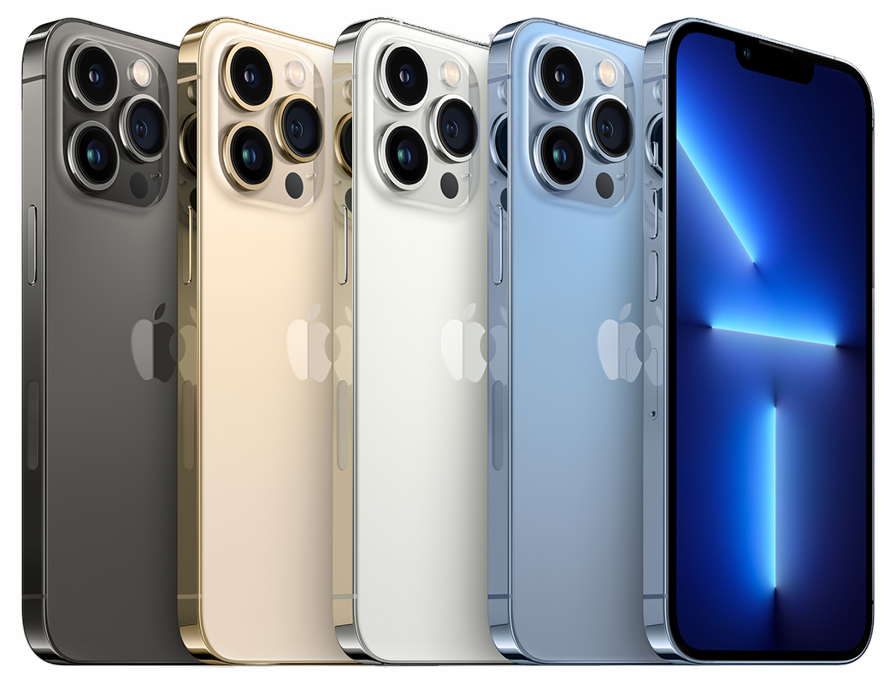

Базовая модель iPhone 13 как и модель iPhone 13 Pro, кроме более
качественной камеры, получила улучшенный экран с уменьшенным вырезом
для системы фронтальных камер.
Экраны всех смартфонов линейки iPhone будут выполнены по технологии
OLED, при этом дисплеи iPhone 13 Pro и iPhone 13 Pro Max будут
поддерживать чаcтоту обновления 120 Гц.
Новинки будут построены на базе однокристальной системы Apple A15,
которая проводится силами тайваньской компании TSMC с использованием
5-нм технологического процесса
получат накопитель на 1 ТБ[3].Также телефон может получить функцию
постоянно включенного дисплея. Такая технология впервые использована
компанией Apple в устройствах
Apple Watch 5.
iPhone 13 Pro Max

Совершенно новый iPhone 13 Series раскрывает всю мощь сети 5G от
T-Mobile, используя расширенный диапазон 5G для широкого покрытия и
5G Ultra Capacity для
сверхбыстрой скорости в большем количестве мест. Благодаря новому
значку Ultra Capacity 5G, впервые показанному на iPhone 13,
вы сможете видеть, когда находитесь в зоне покрытия 5GUC. Все
тарифные планы включают доступ к 5G с T-Mobile. Изучите технические
характеристики iPhone 13,
обзоры и купите доступные цвета и размеры хранилища уже сегодня.